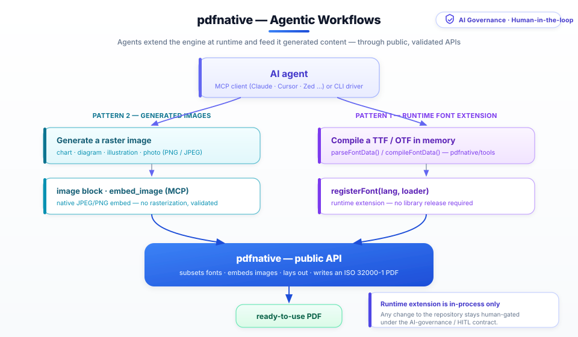

Agentic workflows
How AI agents compose with pdfnative. pdfnative is designed so an autonomous agent can do more than call the engine — it can extend it at runtime and feed it content it generated itself, all without waiting for a library release. This guide documents two concrete, factual patterns and the exact public APIs they rely on.
Both patterns are built entirely on already-shipped, public API surfaces:
- The library's
registerFont()/loadFontData()font registry, thepdfnative/toolssub-path (parseFontData/compileFontData, since v1.5.0), and the bundledpdfnative-build-fontCLI. - The image entry points: the
imagedocument block (library + CLI) and theembed_imageMCP tool.
There is no new API here — the point is that the existing surfaces were shaped so agents can use them autonomously, under the project's AI-governance / human-in-the-loop contract.
Pattern 1 — extend the engine at runtime, without a release#
pdfnative ships 26 bundled font-data modules (22 scripts plus Latin, math, and monochrome + colour emoji). But its font system is open: any TrueType/OpenType font becomes a first-class, CIDFont-embedded, subset-on-use font once it is registered. Registration is a runtime call — it does not require rebuilding or republishing pdfnative.
This is what lets an agent add a capability the moment a document needs it. In a
previous iteration of this project, an agent using the MCP server needed
mathematical symbols before the bundled Noto Sans Math font existed as a
release. Because the font registry is a public runtime API, the agent was able to
compile the font data and register it on the spot; the same font later shipped as
registerFont('math', …) in pdfnative 1.5.0. The library did not need to change
for the document to render — the release simply promoted an already-working
runtime pattern into a bundled default.
The three building blocks#
| API | Sub-path | What it does |
|---|---|---|
registerFont(lang, loader) / registerFonts({ … }) |
pdfnative |
Register a lazy font-data loader under a lang code. loadFontData(lang) resolves it on first use. |
parseFontData(bytes) → FontDataObject |
pdfnative/tools |
Parse a TTF/OTF in memory into a registerable font-data object (metrics, cmap, widths, GSUB/GPOS, /W array). Pure — no fs, no child_process, works in browsers / Deno / edge. |
compileFontData(bytes, { fontName }) → string |
pdfnative/tools |
Emit the ES/CJS module source for a font-data file — byte-identical to the pdfnative-build-font CLI. Useful when the agent wants to persist a reusable *-data.js. |
An agent registers a font at runtime#
import { buildDocumentPDFBytes, registerFont, loadFontData } from 'pdfnative';
import { parseFontData } from 'pdfnative/tools';
// The agent obtained the TTF bytes however it likes — a bundled asset,
// a user upload, or a fetch it performed itself.
const ttfBytes: Uint8Array = await getFontBytes();
// Parse in memory → a registerable font-data object.
const fontData = parseFontData(ttfBytes);
// Register it under a lang code. No release, no rebuild.
registerFont('custom', () => Promise.resolve(fontData));
// The registry is only consulted through loadFontData + fontEntries —
// load the data and pass it explicitly (fontRef must be a PDF name; /F1 and /F2 are reserved):
const custom = await loadFontData('custom');
if (!custom) throw new Error('custom font failed to load');
// It is now a first-class font: pdfnative subsets and embeds it on use.
const pdf = buildDocumentPDFBytes({
title: 'Runtime font',
blocks: [{ type: 'paragraph', text: 'Rendered with an agent-registered font.' }],
fontEntries: [{ fontData: custom, fontRef: '/F3', lang: 'custom' }],
});
Persisting a reusable data module#
When an agent wants the font to be reusable across runs — or to hand a ready-made module to a human — it can emit the module source instead:
import { compileFontData } from 'pdfnative/tools';
const source = compileFontData(ttfBytes, { fontName: 'My Font' });
// `source` is byte-identical to what `pdfnative-build-font` writes to disk.
// A human (or a sandboxed file tool) can save it as `my-font-data.js`.
The equivalent one-liner for a human at a terminal is the bundled CLI:
npx pdfnative-build-font fonts/ttf/MyFont.ttf fonts/my-font-data.js
Why this matters. The engine's coverage is not frozen at release time. An agent can close a glyph gap — a new script, a symbol set, a brand font — the instant a document requires it, then optionally graduate that work into a committed data module for the whole team. This is runtime extensibility, not autonomous modification of the published package: the agent extends its own in-process pdfnative instance; the repository is only ever changed by a human under the governance contract.
Pattern 2 — agent-generated images in the PDF#
Modern agents can generate raster content — charts, diagrams, illustrations,
photos. Image-generating agents (for example Antigravity, ChatGPT, and other
multimodal assistants) can pipe that output straight into a pdfnative document.
pdfnative treats a generated PNG/JPEG exactly like any other image: it parses it
natively and embeds it as an Image XObject (/DCTDecode for JPEG,
/FlateDecode for PNG) — no rasterization, no headless browser.
Via the MCP server — embed_image#
An agent that produced an image returns it as base64 and calls embed_image:
{
"tool": "embed_image",
"input": {
"title": "Quarterly trend",
"imageBase64": "<base64 PNG/JPEG the agent just generated>",
"mimeType": "image/png",
"outputMode": "base64"
}
}
For a richer layout, the same base64 payload can be dropped into an image
block on generate_basic_pdf, alongside headings, tables, and barcodes the agent
assembles in the same call.
Via the library or CLI — the image block#
In code, a generated image is just another block:
import { buildDocumentPDFBytes } from 'pdfnative';
const pdf = buildDocumentPDFBytes({
title: 'Report with a generated figure',
blocks: [
{ type: 'heading', text: 'Findings', level: 1 },
{ type: 'paragraph', text: 'The figure below was generated on-device by the agent.' },
{ type: 'image', data: generatedPngBytes, width: 480 },
],
});
From the shell, an agent driving pdfnative-cli render supplies the same block
in its JSON document (image bytes are provided as a block field or an asset path,
subject to the CLI's path-validation rules).
Safety. pdfnative validates image inputs at the boundary — it parses the JPEG/PNG structure natively and rejects malformed or unsupported payloads (e.g. raw RGBA). The agent supplies pixels; pdfnative decides whether they are a well-formed image before embedding.
How the two patterns fit together#
A single agent turn can combine both: register a brand font, generate a cover image, and assemble a signed, archive-grade PDF — in one MCP conversation or one CLI pipeline, without a pdfnative release in the loop.

The engine stays zero-dependency and unchanged; the agent supplies fonts and images through public, validated entry points. Anything that would modify the repository — a new bundled font, a code change — still goes through a human under the AI-governance / human-in-the-loop contract.
See also#
- AI governance & human-in-the-loop — the contract that keeps repository changes human-gated.
- MCP integration — the 28 MCP tools, including
embed_imageanddraft_governance_issue. - CLI guide — driving pdfnative from the shell.
- Font validation —
validateFontData()for sanity-checking a font module before registering it.